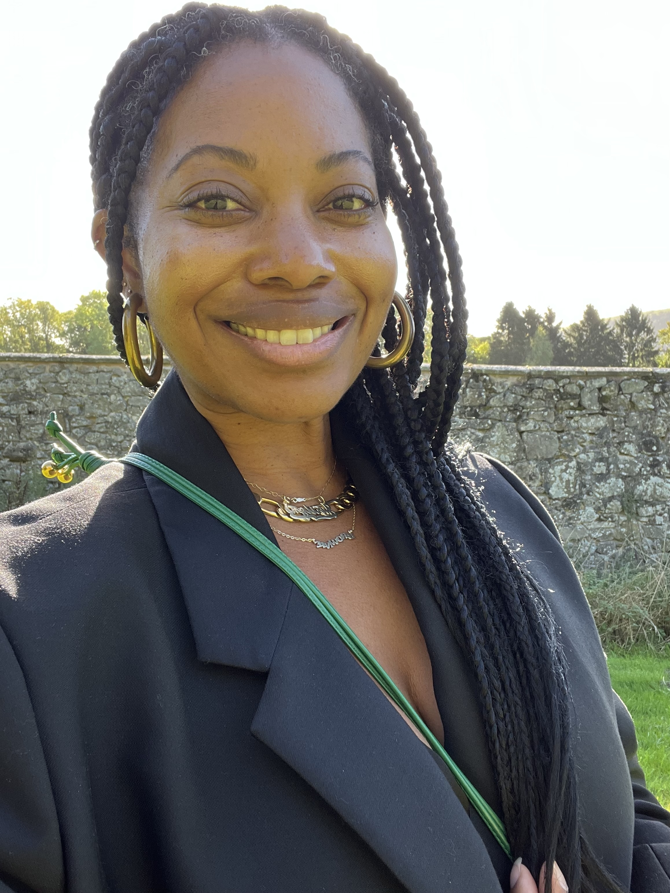

Born and raised in Los Angeles, I’ve always been naturally curious about people: what drives them, what they choose, and why. That instinct to observe and understand is what led me to a career in research.
Currently I’m based in Brooklyn, a city that inspires me every day. The people here are endlessly interesting to observe — everyone moving with purpose, style, and their own story. After hours and on the weekends I stay busy exploring fashion trends, baking, and listening to podcasts.
Work History
Four principles that guide every study, regardless of timeline or scope.
Understand the decisions research needs to inform. Refine questions to ensure insights drive action, not just reports.
Select methods based on the decision and level of certainty required, not habit or preference.
Move quickly with the lightest study that can confidently answer the question. Speed and rigor aren’t opposites.
Maintain strong fundamentals: clear hypotheses, sound sampling, and disciplined analysis, even under tight timelines.
While I enjoy combing through data and refining survey questions, my real value lies in intuition, judgment, and a deep understanding of the people I’m building for.
I want AI to make me better, to give me time back and make my work more accessible. That’s how I’m using it today.
How I use AI:
Owning research strategy, infrastructure, researcher mentorship, and organizational influence.
Defined research roadmaps, balancing inbound product and marketing requests with foundational opportunities and anticipating business needs.
Advised on OKR and KPI development. Authored white papers and tracking studies with influence reaching CMO level.
Managed, mentored, and developed junior researchers, maintaining quality standards and connecting research to business strategy.
Up-leveled team impact through implementation of new research programs (e.g., rapid research panel, NPS tracking) and participation in team-wide critique and feedback sessions.